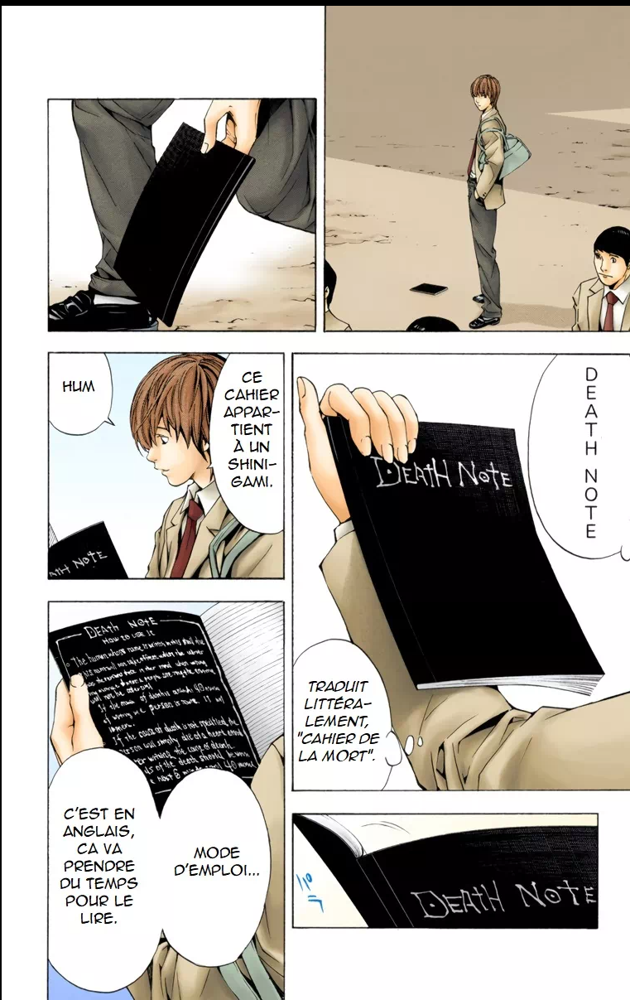
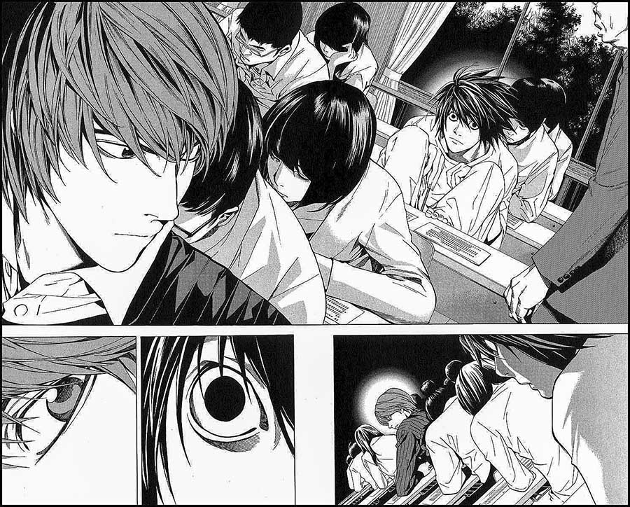
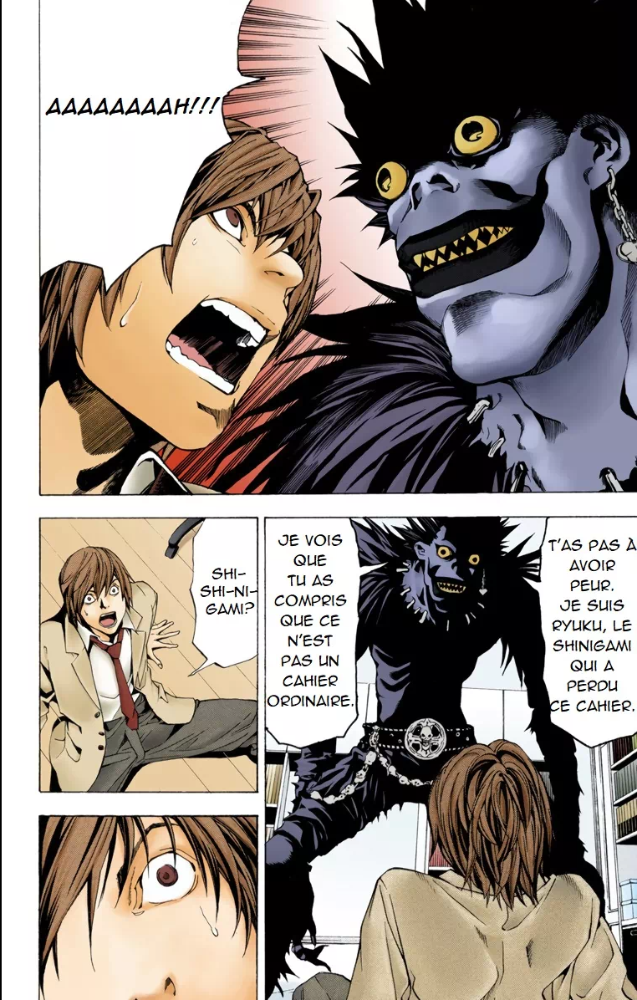
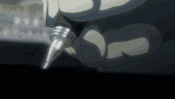
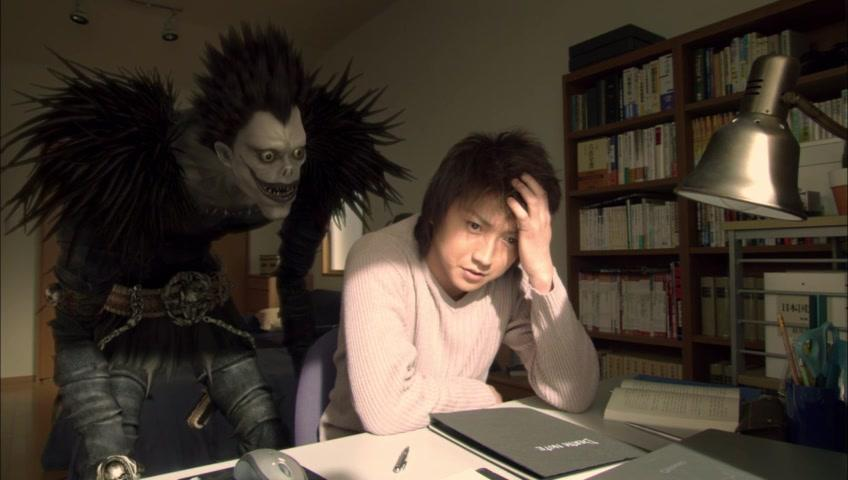
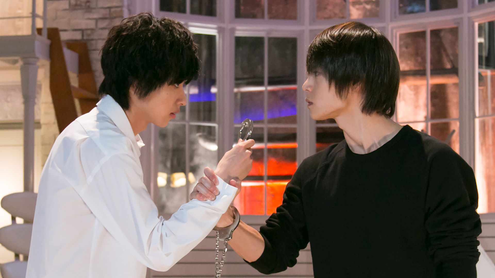
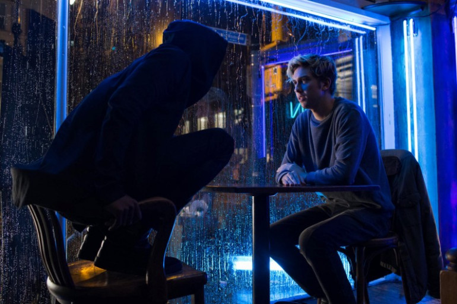

Galerie Photos
Découvrez une sélection d'images officielles de l'univers Death Note, incluant des planches du manga, captures d'écran de l'anime, et photos des adaptations live-action.
Planches Manga

Planche manga
Light découvre le Death Note

Premiere rencontre entre Light et L

Planche manga
Ryuk explique les règles
Captures d'Écran Anime

Light écrit dans le carnet
[TV]
Screenshot anime
L mange des sucreries
[TV]
Screenshot anime
Misa en tenue gothique
Photos Films Live-Action

Film 2006
Tatsuya Fujiwara (Light)

Drama 2015
Kenichi Matsuyama (L)

Film Netflix 2017
Nat Wolff (Light Turner)